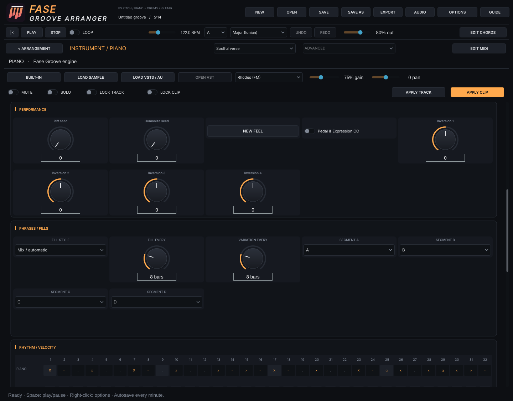
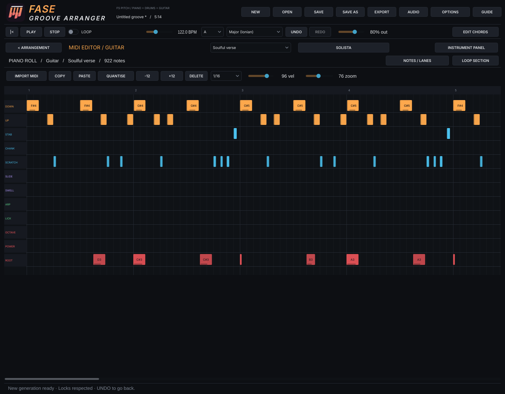
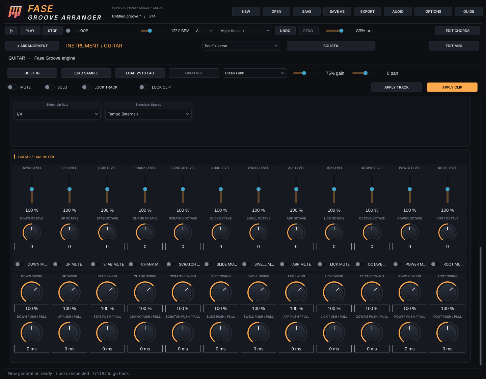

Guida di utilizzo – Fase Groove Arranger
Fase Groove Arranger crea il MIDI di un brano intero: scegli un genere e un giro di accordi, ascolti piano, basso, archi, batteria e chitarra, cambi quello che vuoi e poi esporti il brano o le singole tracce con i tuoi suoni.
I groove sono quelli di Fase Groove Piano, Drums e Guitar. Qui suonano nello stesso brano: una tonalità, un tempo e un arrangiamento condivisi.
Indice
- Installazione
- Primo brano in 60 secondi
- La finestra, sezione per sezione
- Costruire un brano: intro, break, drop
- Accordi, tonalità e feel
- Le tracce e i tuoi suoni
- Modificare le note
- La chitarra e il piano di accompagnamento
- Ricette per partire
- Salvare ed esportare
- Scorciatoie
- Domande frequenti e problemi
- Ascolta la mia musica e crediti
1. Installazione
Scarica il pacchetto del tuo sistema e scompattalo. L'app funziona da sola: non devi installare una DAW o i tre plugin Fase Groove.
| Sistema | Pacchetto | Avvio |
|---|---|---|
| Windows | .zip | Apri la cartella estratta e avvia Fase Groove Arranger.exe. |
| macOS | .tar.gz | Estrai l'archivio e apri Fase Groove Arranger.app. Il pacchetto è universale, Intel e Apple Silicon. |
| Linux | .tar.gz | Estrai l'archivio e avvia Fase Groove Arranger. Conserva i permessi di esecuzione. |
Se scarichi da GitHub Actions, nello ZIP dell'artifact trovi il pacchetto indicato nella tabella: estrai anche quello. Questi pacchetti sono portatili; non hanno installer o firma di distribuzione.
Al primo avvio: premi AUDIO, scegli l'uscita che usi per ascoltare e un buffer adatto al tuo dispositivo. L'app usa l'uscita audio; non apre il microfono.
Parti dal suono guida. Puoi ascoltare e costruire tutto il brano prima di scegliere i tuoi strumenti.
2. Primo brano in 60 secondi
- Nel menu del genere scegli Soulful.
- Lascia 5.0 min oppure scegli la durata che ti serve.
- Premi NUOVO ARRANGIAMENTO: compaiono intro, parti principali, break e outro.
- Premi AVVIA o la barra spaziatrice e ascolta.
- Clicca un clip del piano nella parte principale: si apre il piano roll grande. Sposta una nota o cambia la sua dinamica.
- Torna con < ARRANGIAMENTO. Clicca il nome Piano e scegli un suono, un campione o il tuo VST.
- Premi SALVA, dai un nome al progetto e poi EXPORT per salvare un WAV, un MP3 o il MIDI.
Vuoi un'altra versione? NUOVA TRACCIA cambia solo lo strumento scelto; NUOVO CLIP cambia solo quella traccia in quella sezione. ANNULLA ti riporta al tentativo precedente.
Hai trovato una parte che ti piace? Apri il suo pannello e accendi BLOCCA TRACCIA o BLOCCA CLIP prima di provare altre varianti.
3. La finestra, sezione per sezione

In alto trovi i comandi del progetto, il trasporto e quello che vale per tutti: tempo, tonalità e scala. Sotto scegli genere, durata e giro di accordi. La parte grande è il brano, con le sezioni in orizzontale e gli strumenti in verticale.
| Dove | Cosa trovi |
|---|---|
| NUOVO · APRI · SALVA · SALVA COME | Un progetto nuovo, l'apertura e il salvataggio dei tuoi brani. |
| AVVIA · FERMA · LOOP | Ascolto, ritorno all'inizio e ripetizione della zona scelta. Il cursore azzurro mostra dove sei. |
| Genere e durata | Il carattere del brano e la durata desiderata, da 4 a 12 minuti. |
| PROGRESSIONE · MODIFICA ACCORDI | I giri pronti e la modifica dei singoli accordi. La riga HARMONY mostra il giro attuale. |
| Arrangiamento | Ogni rettangolo è un clip: le note di uno strumento in una sezione. |
| Nome della traccia | Apre il pannello dello strumento, con groove, esecuzione, suono e mixer. |
| Clip | Apre l'editor MIDI grande, soltanto per quella traccia e quella sezione. |
| AUDIO · OPZIONI · GUIDA | Dispositivo audio; informazioni, crediti e privacy; questa guida. |
I colori seguono gli strumenti: ambra per piano e cassa, azzurro per basso e rullanti/clap, verde per i piatti, viola per le percussioni, rosso per archi e tom/crash. Nella chitarra ogni gruppo di pennate ha il suo colore.
M e S accanto al nome di una traccia fanno mute e solo senza aprirla. Il clic sull'intestazione di una sezione porta la riproduzione al suo inizio. Lo ZOOM cambia quanto brano vedi.
4. Costruire un brano: intro, break, drop
NUOVO ARRANGIAMENTO prepara la forma del genere scelto e scrive il MIDI. La durata si arrotonda alla frase musicale successiva: un obiettivo di cinque minuti può diventare, per esempio, 5:14.
| Parte | Come usarla |
|---|---|
| Intro / Mix in | L'ingresso del brano, 16 o 32 battute. Le prime 16 non hanno piano, basso, archi o chitarra: hai spazio per il mixaggio. |
| Main | Il groove principale. Qui fai riconoscere il giro e il suono del brano. |
| Breakdown | Un respiro: cambiano gli spazi e il ruolo degli strumenti. |
| Build-up | Una salita verso la ripartenza, nei generi che la prevedono. |
| Drop | Il ritorno del groove pieno. Non deve per forza suonare identico alla prima parte. |
| Outro / Mix out | L'uscita, 16 o 32 battute. Le ultime 16 lasciano di nuovo spazio al mixaggio. |
La forma segue il genere. Deep e Chill si sviluppano con parti più distese; Jackin' ha break brevi e ripartenze; Garage & UK alterna due drop e un taglio; Soulful e Gospel lavorano su risposte e riprese; Afro & Latin dà spazio alle percussioni; Funky & Disco alterna strofe e ritornelli.
Cambiare solo quello che serve
| Pulsante | Cosa cambia |
|---|---|
| GENERA BRANO | Nuove varianti su tutte le tracce sbloccate, conservando le sezioni attuali. |
| NUOVA TRACCIA | La traccia selezionata, lungo tutto il brano. |
| NUOVA SEZIONE | La sezione selezionata, su tutte le tracce sbloccate. |
| NUOVO CLIP | Soltanto la traccia selezionata in quella sezione. |
| NUOVO ARRANGIAMENTO | Ricostruisce forma e note in base a genere e durata. Prima devi sbloccare tracce e clip. |
Tasto destro sulla sezione: rinomina, duplica con le note, sposta, elimina, cambia durata o funzione musicale. + SECTION aggiunge una parte Main dopo quella scelta. Allungare una sezione lascia spazio vuoto: rigenera o scrivi le note per riempirlo. Accorciarla taglia le note oltre il nuovo confine.
Prova così: duplica il drop, cambia soltanto il basso della seconda copia, poi alleggerisci il piano. Mantieni un'idea riconoscibile e cambia chi la porta avanti.
5. Accordi, tonalità e feel
Tonalità e scala sono una sola scelta per tutto il brano. Piano, basso, archi e chitarra usano lo stesso giro. Non serve collegare i singoli strumenti con LINK.
| Controllo | Cosa fa |
|---|---|
| Tonalità / Scala | La fondamentale e il modo del brano. Sono in alto, accanto al tempo. |
| PROGRESSIONE | Sceglie un giro dalla libreria di Fase Groove Piano. Alcuni giri impostano anche la scala adatta. |
| NUOVI ACCORDI | Prepara un altro giro di gradi nella scala scelta. |
| MODIFICA ACCORDI | Cambia ogni accordo: grado della scala oppure maggiore, minore o dominante su una fondamentale cromatica. Da 1 a 8 accordi, con durata condivisa. |
| Estensioni / Voicing | Il colore degli accordi e la disposizione delle note del piano. |
| DENSITÀ | Da poche note a un groove più fitto. |
| SWING | Sposta i sedicesimi alternati: da dritto a più shuffle. |
| FEEL / UMANIZZA | Piccole differenze di tempo e dinamica. |
Il tempo cambia subito la velocità di ascolto. Le altre scelte preparano la prossima generazione: le note che hai già scritto restano al loro posto finché non le applichi.
Nel pannello di uno strumento, APPLICA TRACCIA o APPLICA CLIP applica i suoi parametri mantenendo la variante del groove. I pulsanti NUOVO nell'arrangiamento scelgono invece un'altra variante.
Dopo aver cambiato tonalità o giro, rigenera insieme gli strumenti interessati. Una parte bloccata conserva le sue note, anche se il resto del brano cambia armonia.
6. Le tracce e i tuoi suoni
Le prime tredici tracce sono i pezzi della batteria: Kick, Snare, Clap, Rim, Closed hat, Open hat, Ride, Shaker, Tambourine, Conga, Cowbell, Tom, Crash. Seguono Bass, Piano, Strings e Guitar. La chitarra resta tutta su una traccia.


Clicca il nome di uno strumento per aprire il suo pannello. In alto scegli con cosa ascoltarlo; sotto trovi groove, feel, esecuzione e fill. EDIT MIDI apre le note; < ARRANGIAMENTO torna al brano.
| Strumento | Da dove partire |
|---|---|
| Piano | Groove, gate, registro e strum; poi movimento, linea in alto e range per rifinire la mano destra. |
| Bass | La linea di basso e il suo feel: classico, sub o sub con spazi sul beat. |
| Strings | Lo stile degli archi: un sostegno lungo o una parte più ritmica. |
| Batteria | Soltanto il pezzo scelto: groove, dinamica, nota MIDI e posizione rispetto al beat. |
| Guitar | Pennate, let ring, spazio per la band, anticipi e mixer delle dodici righe. |
Piano: vista estesa
Le schermate mostrano la lingua inglese; i nomi dei comandi qui sotto seguono la lingua italiana.
Il pannello del piano mostra i controlli estesi. Il menu ESTESA in alto porta direttamente a Esecuzione, Frasi/Fill, Ritmo/Dinamica, Strumenti musicali e Suono guida.
Trovi i rivolti per accordo, il seed del riff e del feel, NUOVO FEEL, pedale ed espressione CC64/CC11, ordine e blocchi A–D, griglia di 32 step e cursori della dinamica. Clicca uno step per scegliere pausa, nota, accento, ghost, anticipo o tenuto. Trascina il cursore per la dinamica; doppio clic torna al valore automatico. RND PIANO cambia il ritmo rispettando i segmenti bloccati; DINAMICHE CASUALI cambia solo le dinamiche.
DNA, MORPH, A/B, VARIANTS e il CIRCOLO DELLE QUINTE usano gli strumenti musicali originali. I risultati preparano i parametri: APPLICA TRACCIA / APPLICA CLIP scrive le note. A e B permettono anche l'ascolto del clip con due voicing: ANNULLA annulla la prova. PRESETS salva e carica i parametri della traccia in file .fgapreset. IMPORTA MIDI stima accordi e ritmo; verifica il risultato prima di rigenerare. LEARN apprende un accordo quando rilasci tutti i tasti, dopo aver scelto l'ingresso MIDI.
Da MODIFICA ACCORDI → Ogni accordo imposti la durata armonica condivisa: mezza, una, due o quattro battute. Il pump del suono guida offre frequenza, rilascio e sorgente Tempo / MIDI della cassa. Quest'ultima segue le note della traccia Kick; non è un ingresso audio esterno.
Da OPZIONI → Lingue scegli italiano, inglese, spagnolo, francese, tedesco o portoghese. I suggerimenti dei controlli si attivano e disattivano nello stesso menu. Entrambe le preferenze restano sul computer; i manuali completi sono disponibili in italiano e inglese.
Suono guida, campione o VST
| Pulsante | Cosa scegli |
|---|---|
| BUILT-IN | Torna al suono guida. Piano e basso hanno i sette timbri di tastiera; archi, quattro chitarre e quattro kit hanno i loro suoni. |
| CARICA CAMPIONE | Un tuo WAV, AIFF, FLAC o OGG, fino a 60 secondi. Il campione resta sul disco; il progetto ne ricorda il percorso. |
| CARICA VST3 / AU | Uno strumento installato sul tuo computer. Scegli il bundle .vst3; su macOS puoi scegliere anche un'Audio Unit installata. |
| APRI VST | L'interfaccia dello strumento che hai caricato. |
GAIN, PAN, MUTE e SOLO appartengono alla traccia. TIMBRO, RIVERBERO, CHORUS e PUMP cambiano soltanto il suono guida; per il suono del tuo VST usa i suoi comandi. I parametri di groove continuano a scrivere il MIDI che gli arriva.
Per un campione intonato, la radice iniziale è MIDI 60. Per la batteria è la nota del pezzo. Tasto destro sul nome → Radice campione la cambia. È un campione trasposto sulle note della traccia, non una libreria multisample.
7. Modificare le note
Clicca un clip: l'editor occupa la finestra. Il menu della sezione sceglie la parte da modificare; LOOP SEZIONE la ripete mentre lavori. Ogni editor mostra soltanto la sua traccia. Per i pezzi della batteria c'è una sola riga.
| Azione | Risultato |
|---|---|
| Clic nel vuoto | Aggiunge una nota sulla griglia. |
| Trascina una nota | La sposta nel tempo; nel piano roll intonato cambia anche l'altezza. |
| Bordo destro della nota | Cambia la durata delle note intonate. |
| Alt + trascina in verticale | Cambia la dinamica, senza spostare la nota. |
| Shift + clic | Aggiunge o toglie una nota dalla selezione. |
| Tasto destro / ELIMINA / Backspace | Elimina la nota. Nelle lane della chitarra, il tasto destro elimina il gesto di pennata. |
| Ctrl/Cmd + A | Seleziona tutte le note del clip. |
| QUANTIZZA | Allinea alla griglia scelta: 1/4, 1/8, 1/16 o 1/32. |
| −12 / +12 | Sposta le note intonate di un'ottava. |
| VEL | Cambia la dinamica della selezione; senza selezione, quella delle note nuove. |
| COPIA / INCOLLA | Copia la selezione, oppure tutto il clip, e incolla mantenendo le posizioni nella sezione. |
Quantise e trasposizione lavorano sulla selezione; senza selezione, su tutto il clip. Lo ZOOM ingrandisce i dettagli nel tempo. Esc torna all'arrangiamento.
IMPORTA MIDI, oppure un .mid trascinato sulla finestra, sostituisce le note del clip scelto. Il tempo del progetto resta quello dell'Arranger. Nel kick o in un altro pezzo di batteria, le note importate vengono assegnate al solo pezzo scelto. ANNULLA recupera il clip precedente.
8. La chitarra e il piano di accompagnamento


La chitarra si modifica come in Fase Groove Guitar: dodici modi di suonare lo stesso accordo, tutti nella stessa traccia.
| Riga | Cosa suona |
|---|---|
| DOWN / UP | Pennate giù sull'accordo e pennate su sulle corde acute. |
| STAB / CHANK | Accordi corti e chop funk molto brevi. |
| SCRATCH | Il colpo stoppato, per riempire gli spazi ritmici. |
| SLIDE / SWELL | Slide verso l'accordo e ingressi in crescendo. |
| ARP / LICK | Una corda alla volta e frasi sull'accordo. |
| OCTAVE / POWER / ROOT | Ottave, power chord e fondamentale sulle corde basse. |
Clicca nella lane per aggiungere una pennata sull'accordo della battuta. Le sue note si selezionano e si spostano insieme. NOTE / RIGHE passa al piano roll quando vuoi intervenire su una singola nota.
Chi porta avanti il giro?
Nel pannello o nell'editor della chitarra, SOLISTA cambia i ruoli. Con SOLISTA attivo, la chitarra porta il groove e il piano lascia spazio, con accordi e risposte di accompagnamento. Piano e chitarra vengono aggiornati rispettando i blocchi. ANNULLA torna ai ruoli precedenti.


Nel mixer, le dodici righe sono affiancate: livello, ottava, mute, quota di swing e push/pull. Il push/pull è in millisecondi: negativo anticipa, positivo ritarda.
Per lasciare spazio al basso, prova Room for band. Per una chitarra più percussiva, accorcia le pennate e riduci Let ring. Ascolta la chitarra insieme al piano, non soltanto in solo.
9. Ricette per partire
Soulful: piano davanti, chitarra negli spazi
- Scegli Soulful, una durata di cinque o sei minuti e premi NUOVO ARRANGIAMENTO.
- Nel piano parti da Rhodes (FM) e un giro con settime o none.
- Ascolta la parte principale. Se è troppo piena, abbassa la densità del piano e premi APPLICA CLIP.
- Lascia la chitarra in accompagnamento. Usa il suo mixer per togliere le righe che coprono il piano.
- Blocca la parte di piano che ti piace e prova un NUOVA TRACCIA sul basso.
Deep: meno note, più spazio
- Scegli Deep e genera la forma del brano.
- Nel piano prova un registro più raccolto, gate più lungo e poche note.
- Per il basso scegli un feel Sub. Lascia gli archi come sostegno e ascolta il break.
- Duplica una parte principale e cambia soltanto una o due tracce nella ripresa.
Jackin': groove corto e ripartenze
- Scegli Jackin' o Jackin' Piano.
- Parti da gate corto sul piano e un feel più swingato.
- Nel break togli quello che serve alla ripartenza: un NUOVO CLIP sul piano può bastare.
- Tieni la cassa riconoscibile e confronta la ripartenza con il tratto precedente usando LOOP SEZIONE.
Funky & Disco: la chitarra guida
- Scegli Funky & Disco e genera il brano.
- Apri la chitarra e attiva SOLISTA.
- Ascolta DOWN, UP, CHANK e OCTAVE nel contesto; riduci quelle che si sovrappongono troppo.
- Prova gli archi nel ritornello e lascia più vuoto il giro precedente.
- Controlla l'outro: le ultime sedici battute devono restare libere dagli strumenti armonici per il mixaggio.
10. Salvare ed esportare
SALVA / SALVA COME salva un progetto .fga: sezioni, note, parametri, blocchi, mixer e stato dei VST. I campioni e i plugin restano nei loro percorsi: conserva i file usati dal brano.
Ogni minuto viene scritta una copia di recupero se ci sono modifiche. AUDIO → Recupera autosave la apre; Apri cartella autosave mostra dove si trova. Salva copie con nomi diversi quando vuoi conservare versioni del brano. ANNULLA conserva fino a quaranta passaggi mentre l'app è aperta.
| In EXPORT | Cosa ottieni |
|---|---|
| MIDI | Il brano multitraccia, una traccia o tutte le tracce in file separati. Comprende tempo e marker delle sezioni; non contiene i suoni. |
| WAV | Mix, singola traccia o tutti gli stem, stereo a 24 bit. È il formato da usare per continuare il mixaggio. |
| MP3 | Mix, singola traccia o tutti gli stem, stereo a 320 kbps / 44,1 kHz. L'encoder è incluso. |
Gli stem WAV partono tutti dall'inizio del brano, hanno la stessa durata e comprendono tre secondi di coda. Anche una traccia vuota produce un file allineato. Il mix segue mute e solo; uno stem viene esportato anche se la sua traccia è muta e conserva gain, pan e livello master.
Per riportare gli stem in una DAW scegli WAV. L'MP3 aggiunge il ritardo del codec: va bene per ascoltare e condividere, non per l'allineamento preciso delle tracce.
11. Scorciatoie
| Tasti | Azione |
|---|---|
| Spazio | Play / pausa. |
| Esc | Torna all'arrangiamento dall'editor. |
| Ctrl/Cmd + S | Salva. |
| Ctrl/Cmd + Shift + S | Salva con un altro nome. |
| Ctrl/Cmd + Z | Annulla. |
| Ctrl/Cmd + Shift + Z / Ctrl/Cmd + Y | Ripeti. |
| Ctrl/Cmd + A, nell'editor | Seleziona le note del clip. |
| Delete / Backspace, nell'editor | Elimina la selezione. |
Nella guida, Ctrl/Cmd + F porta alla ricerca. Le frecce accanto alla ricerca passano tra i risultati; A− / A+ cambia la dimensione del testo. Clicca una schermata per aprirla più grande.
12. Domande frequenti e problemi
Ho cambiato tonalità, ma sento ancora gli accordi di prima
Hai preparato una nuova tonalità, mentre i clip contengono ancora le note precedenti. Rigenera gli strumenti armonici interessati. Controlla i blocchi: una parte bloccata mantiene le proprie note.
Non sento niente
Controlla AUDIO, l'uscita scelta, AVVIA, il livello master e MUTE/SOLO. Nel pannello della traccia premi BUILT-IN per ascoltare con il suono guida. Se quello funziona, controlla il campione o il VST assegnato.
Il VST o il campione non si trova più
Il progetto ne ricorda il percorso, ma il file può essere stato spostato o mancare su questo computer. Usa CARICA CAMPIONE o CARICA VST3 / AU per ricollegarlo. Controlla anche che il plugin abbia la stessa architettura dell'app e la sua autorizzazione d'uso. Finché uno strumento manca, l'esportazione audio ti chiede di ricollegarlo.
Ho modificato delle note. Come le tengo mentre provo altro?
Accendi BLOCCA CLIP per quella parte o BLOCCA TRACCIA per tutto lo strumento. Poi usa i pulsanti NUOVO sugli altri elementi. Puoi continuare a modificare a mano anche una parte bloccata.
La durata non è esattamente quella che ho scelto
Il brano chiude una frase musicale, invece di tagliarla a metà. Cambiare BPM dopo la generazione cambia anche la durata in minuti. Per rifare la forma al nuovo tempo scegli NUOVO ARRANGIAMENTO.
Dove sono registrazione, automazioni e catene di effetti?
Questa versione lavora sull'arrangiamento MIDI. Registrazione audio/MIDI, automazioni, editing audio, bus/send, catene di effetti esterni e compensazione della latenza dei plugin non sono presenti. Puoi esportare MIDI e WAV per continuare il lavoro nella tua DAW. Alcuni controlli avanzati dei plugin Fase Groove non sono ancora riportati nell'Arranger.
Il file MIDI non viene importato
Usa un file MIDI con tempi in PPQ. I file SMPTE non sono supportati. L'importazione entra nel clip scelto e si ferma alla durata della sua sezione; non ricostruisce automaticamente una canzone esterna completa.
13. Ascolta la mia musica e crediti
Fase Groove Arranger è di Fabio 'Pitch' Serra / FS Pitch, DJ & Producer.
Ascolta Fabio 'Pitch' Serra su Spotify
Supporta il progetto con PayPal
Assistenza allo sviluppo: Claude (Anthropic) e Codex (OpenAI), AI coding assistants. Crediti, licenze e privacy si aprono da OPZIONI.
Codice sorgente e famiglia Fase Groove
L'app è gratuita e open source, GNU AGPL v3 o successiva. Usa JUCE e il carattere Inter. Funziona offline, senza account, analytics o caricamenti della tua musica. I collegamenti esterni aprono il browser soltanto se li scegli. Campioni e VST personali mantengono le proprie licenze e condizioni; i dettagli sono in Privacy e Licenze, incluse nel pacchetto.